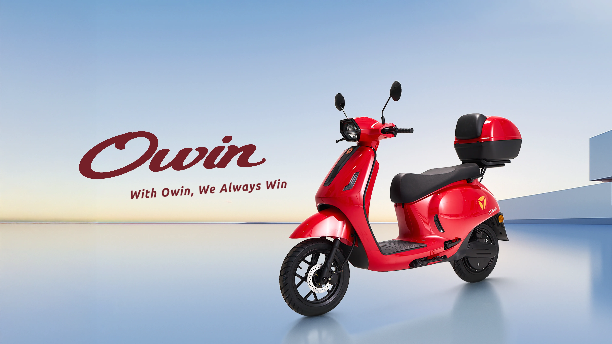
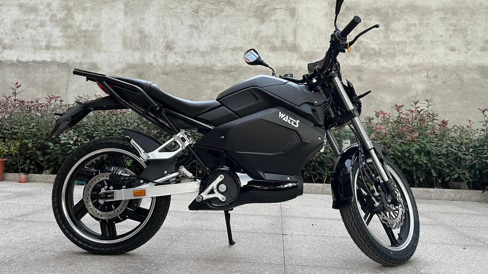

GCX X11
Explorador UrbanoIdeal para pequenos trajetos urbanos, faculdade e deslocamentos rápidos.
Autonomia
60km
Velocidade
Máxima entre 32km/h e 45km/h
Recarga
Média de 6h a 8h
Vida útil estimada da bateria: 3 a 5 anos
Preço
R$ 8k ~ 12k

Shineray SE 1
Trabalhador InteligenteIdeal para Delivery, deslocamento profissional e uso urbano intenso.
Autonomia
80km
Velocidade
Máxima entre 32km/h e 55km/h
Recarga
Média de 7h
Vida útil estimada da bateria: 4 e 5 anos
Preço
R$ 11k ~ 15k

Yadea Owin
Lifestyle PremiumIdeal para Passeios urbanos, lifestyle e mobilidade sofisticada.
Autonomia
90km
Velocidade
Máxima entre 45km/h e 60km/h
Recarga
Média de 6h a 7h
Vida útil estimada da bateria: 5 anos
Preço
R$ 16k ~ 22k

Voltz EV1
Conectado ao DigitalIdeal para Mobilidade urbana diária e deslocamentos médios.
Autonomia
100km
Velocidade
Máxima de 75km/h
Recarga
Média de 5h a 6h
Vida útil estimada da bateria: acima de 5 anos
Preço
R$ 18k ~ 24k

Watts W125
Motociclista TradicionalIdeal para Uso urbano diário e avenidas principais.
Autonomia
120km
Velocidade
Máxima de 90km/h
Recarga
Média de 5h a 6h
Vida útil estimada da bateria: 5 anos
Preço
R$ 22k ~ 28k

VMoto Super Soco CPx PRO
Executivo PerformanceIdeal para Grandes avenidas, mobilidade executiva e uso urbano premium.
Autonomia
140km
Velocidade
Máxima de 105km/h
Recarga
Média de 4h a 5h
Vida útil estimada da bateria: acima de 5 anos
Preço
R$ 32k ~ 40k